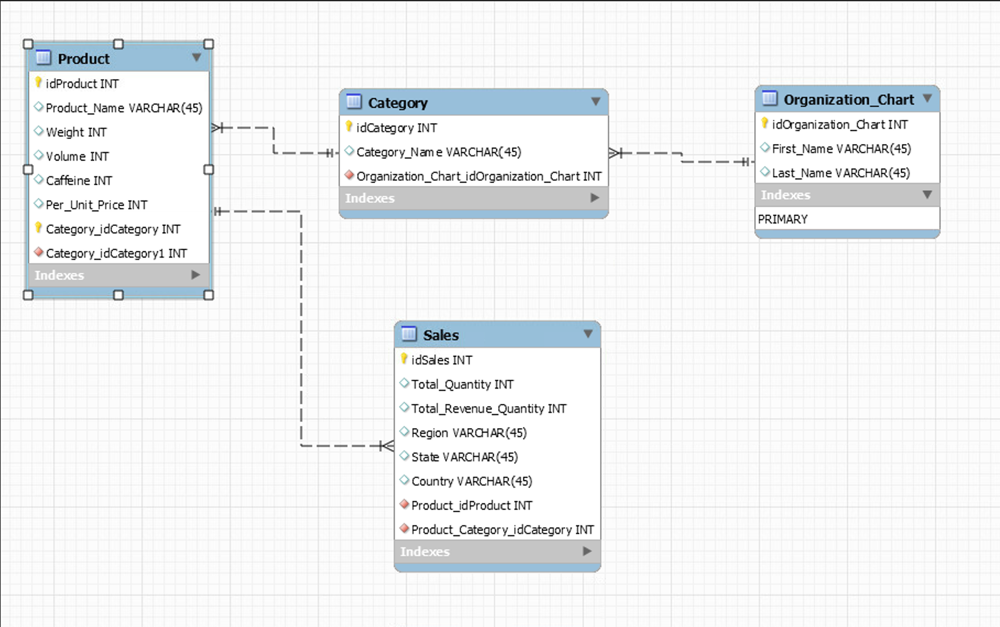

Projects
Predictive Analysis of Decision to Purchase a Home
This project analyzed factors involved in home buying decisions in the global housing market and aimed to develop predictive models to determine whether a customer will make the decision to purchase a home. The project involved developing dashboards detailing various socioeconomic factors involved in the homebuying process as well as machine learning models utilizing logistic regression, decision trees, and XGBoost methods.
Tools: Tableau, Python (pandas, scikit-learn, seaborn)
Findings:The analysis determined multiple factors affecting the decision to purchase a home globally. Logistic regression proved to be the best method of predicting the target variable and avoided overfitting the data. Overall satisfaction score, legal cases affecting the specific property, crime, and the earned monthly income to monthly payment ratio were determined to be the most significant factors in predicting the target variable. Overall satisfaction score of the property remained the strongest indicator of whether a home will be purchased. The research determined that globally, many are making the decision to not purchase a home based on numerous factors. Ideally, local governments should make significant effort in assisting first time homebuyers such as subsidies while globally, wage increases would be an important first step in improving socioeconomic mobility.
The dashboard below visualizes various trends in the global housing crisis. The choropleth USA portrays a low percentage of home buyers alongside high median home prices while similar home prices in Europe does not deter home buyers from making the decision to purchase a home. Countries in the global south tend to have lower home prices however, likely due to lower wages, there is a low percentage of home buyers.
The pareto chart details the cost of living differences globally which has a significant impact on home buying decisions. 30% of income is allocated to the monthly installment of homes in India compared to only 12.5% in Germany. Germany, Canada, and Australia suggest a slightly more balanced home buying market where wages, subsidies, or low interest rates may assist home buyers in allocating less to monthly installments.
The scatter plot visualizes the positive correlation between salary and monthly expenses. Those on either end of the trend line tend to make the decision to purchase a home.Low salary home buyers make the decision, likely due to smaller property size and lower monthly installments. The opposite is true for home buyers with a high salary who decide to buy property because they can afford high monthly installments. Home buyers caught in the middle tend to make the decision not the purchase a home where monthly expenses average $7,000. Much of the global population likely fall into the lower and middle quadrants, indicating low salaries and high monthly expenses contribute significantly to home buying decisions.

Binary Classification of Car Purchases
This project evaluated performance of random forest, XG Boost, and stacking ensemble machine learning methods to classify whether a car purchase would be classified as a bad purchase. The project involved exploratory data analysis, cleaning, visualization, and supervised learning in a python environment.
Tools: Python (pandas, scikit-learn, seaborn)
Findings: Utilizing sensitivity, specificity, accuracy, and balanced accuracy, each machine learning method was compared to determine the best fit for the data. Sensitivity and specificity for all models determined that the ensemble models were more likely to predict a car as a bad purchase regardless of feature relationships. This indicates the ensemble models were not ideal in determining whether a car is a bad purchase or not.
To account for the poor metrics, receiver operator characteristics (ROC) and area under the curve (AUC) values were calculated for each ensemble model. Hyperparameter tuning was used to reduce overfitting and determine a threshold value which would determine a fair assessment of model performance. Due to the imbalanced data, each model had difficulty determining true positives. The optimal thresholds presented below sacrifices the ability to reject negatives to detect more positive classifications.
This project was important in understanding the limitations of ensemble models in imabalanced data sets. Although the data can be adjusted with synthetic minority over-sampling technique (SMOTE) or thresholds adjusted through ROC/AUC, further feature engineering, ideally through gathering of domain knowledge, would assist in creating the best classification model.
The images below visualize exploratory analysis of the data set as well as the resulting metrics from the ensemble methods used in this project.


Employee Analysis Data Story
This project analyzed employee satisfaction of a fictional business to determine suggestions to stakeholders for areas of improvement. The project utilized data analysis, cleaning, visualization,and presentation in a Tableau data story format, highlighting key data points.
Tools: Microsoft Excel, Tableau
Findings: The findings determined that average employee satisfaction falls between 40% - 60% with employees being least satisfied with commute times and most satisfied with job duties.
Most employees fall in the manufacturing department and also earn the lowest salaries compared to the white collar departments and those with graduate degrees.
Entry level employees are clustered around the Carolina region with many in-office which could contribute to the low satisfaction with commute times.
Forecasting estimates employee sastisfaction to rise as the fiscal year progresses, reaching a peak at around 70%. Stakeholders can expect dips in satisfaction during the winter months towards the end of the year.
Suggestions to stakeholders include improvements to benefit packages to include tuition reimbursement to encourage upwared mobility, consideration for hybrid/remote roles to improve employee morale, and identifying opportunities for advancement for high performance workers.

Consolidation of Beverage Sale Data via ETL/SQL
This project consolidated beverage data from multiple years in order to normalize data for business use.
Tools: Microsoft Excel, MySQL
Deliverables: An entity relationship diagram (ERD) was produced to normalize and standardize the various data. Multiple tables across the database were defined, primary keys and foreign keys were identified, and one-to-many relationships were determined to define the schema.

An SQL script was developed to perform the ETL process. Specific attributes were extracted based on project requirements, missing fields were added where appropriate, data was tranformed through merging and defining new calculated fields, the data was exported and loaded into a final table available to stakeholders.
Download SQL ScriptA technical appendix detailing the deliverables and process was created for documentation purposes. The appendix describes the ERD, schema, ETL process, and defines the metadata. The appendix is important for future reference and for maintaining security and accuracy.
Download Technical AppendixReference Map of Seoul, South Korea
This project created a reference map of Seoul, South Korea using QGIS software and OpenStreetMap data layers.
Tools: QGIS, OpenStreetMap
Deliverables: The reference map visualizes downtown Seoul with the Anam-Dong neighborhood highlighted. The map layers open geospatial and hydrological data to provide geographic context, including the Han River, surrounding street networks, and terrain, styled in a minimalist dark-mode aesthetic with a custom color palette